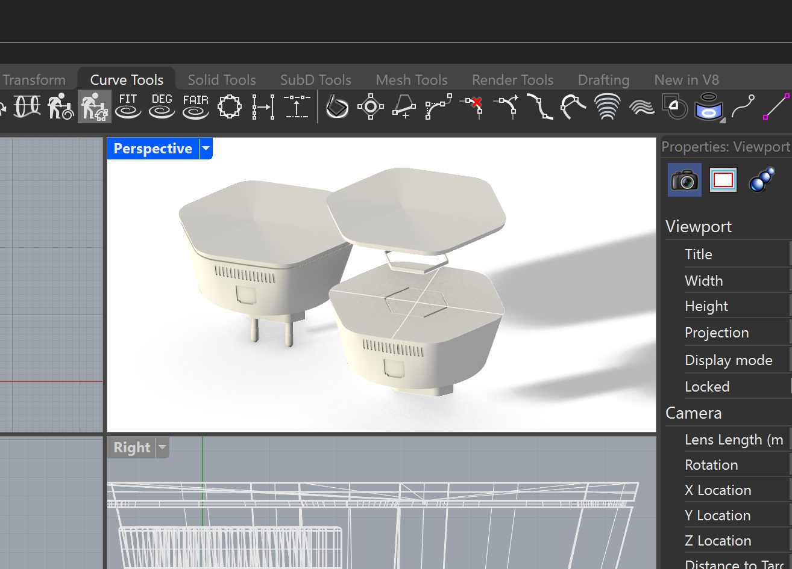
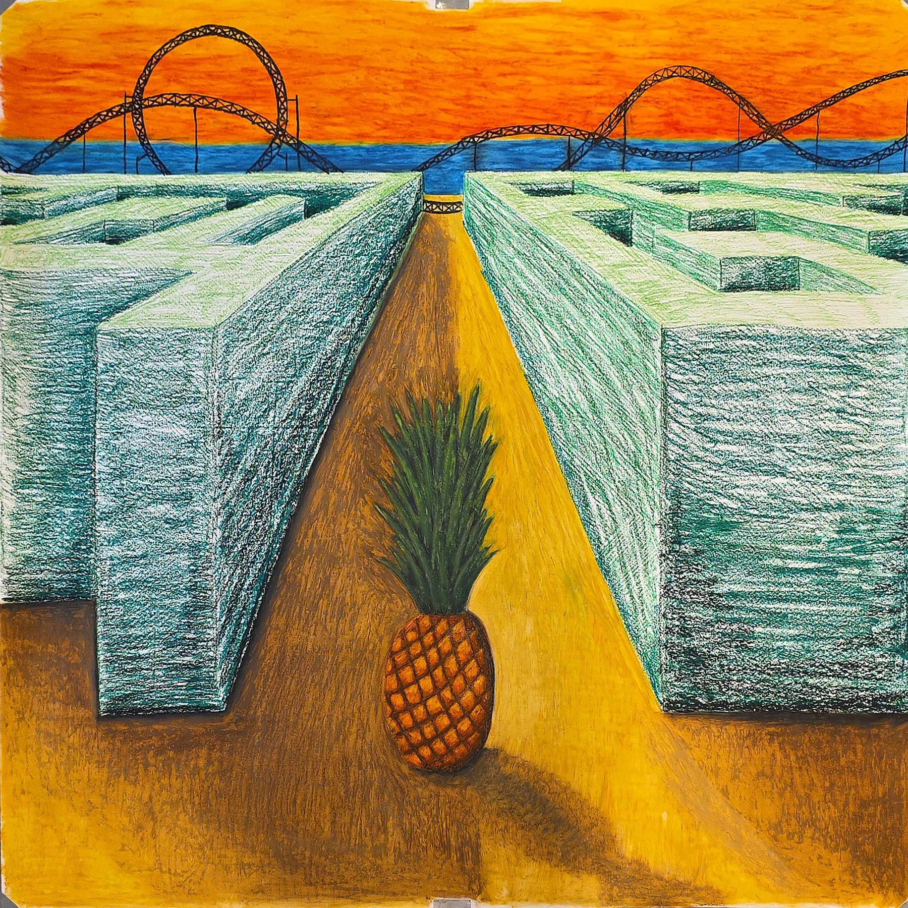
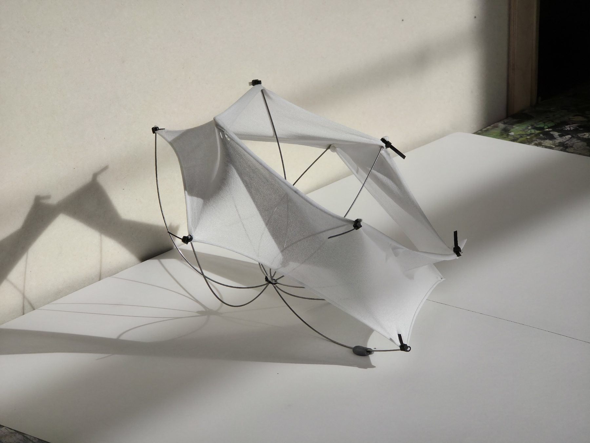
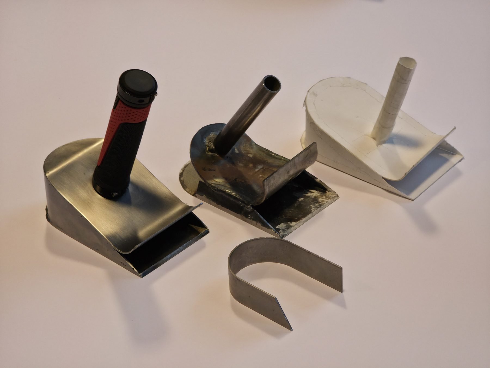
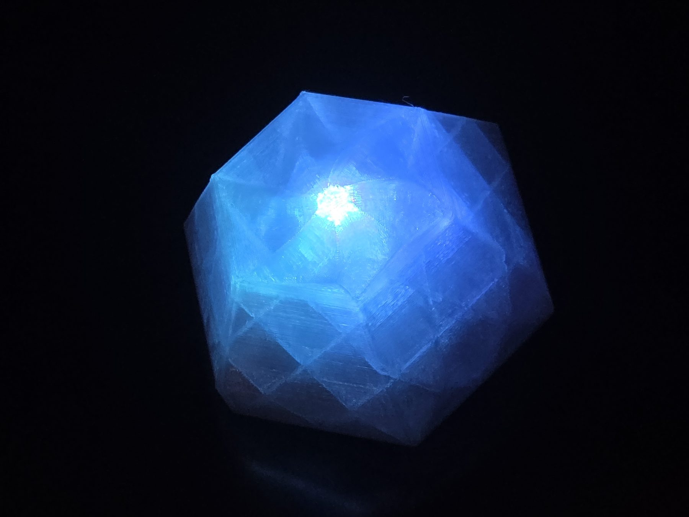
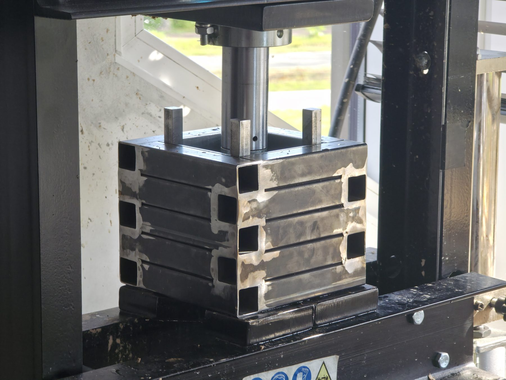
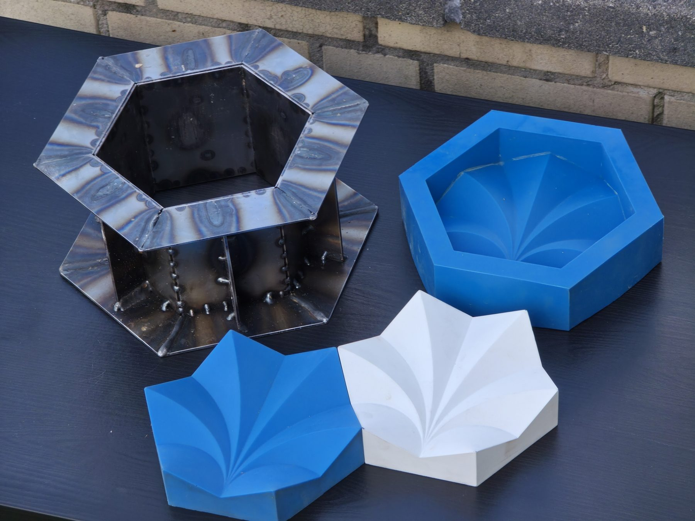

17 works: wood, paper, ceramic, metal, light
Experiments, samples, models, studies and projects. The same way of working, from first material tests to finished objects.







 Previous: 04 Wire Chair
Previous: 04 Wire Chair
Esc / click to close